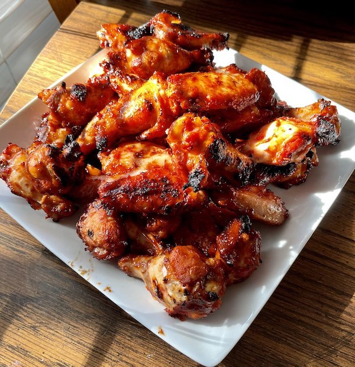

BBQ Wings

Sweet and Sticky BBQ wings.
Grilling wings has become one of my favorite ways to prepare them. I don't trust myself with a deep fryer, I know I would fry everything in arms reach,
so I began to season and grill wings. I also feel the added smokey flavor from the coals is a major plus to grilling the wings instead of baking them.
Ingredients
- Chicken Wings
- Smoked Paprika
- Chipotle Powder
- Garlic Powder
- Onion Powder
- Salt & Pepper
- Your favorite BBQ sauce
Steps
- Mix all spices together well.
- Lightly pat your chicken wings to remove the excess moisture.
- Coat liberally with the spice rub mixture and let sit while you wait for the coals to be ready.
- Once the coals are ready, dump them on one side of the grill and place your chicken wings on the oppisite side so they can cook with indirect heat.
- After about 20 minutes, flip the wings and lightly coat with your favorite bbq sauce.
- After about another 20 minutes, you can temp your wings and they should be about done, if not done already. If they are done,
coat the wings in your favorite bbq sauce and move them to the side of the grill with the hot coals.
- Watch the wings closely, flipping and basting in sauce often so they dont burn. You just want the sauce to caramelize a bit before you pull the wings off the grill.
Home